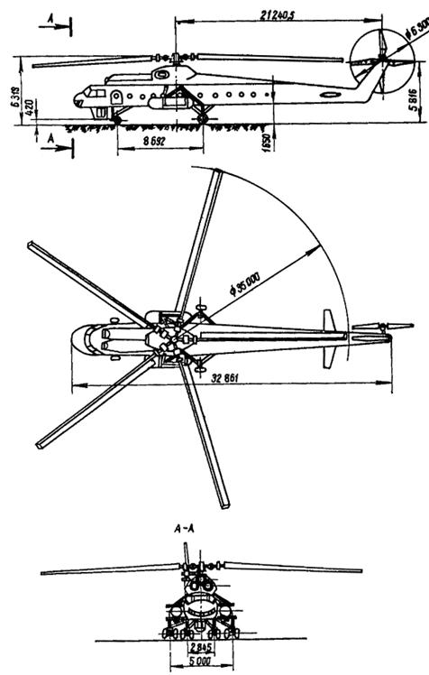
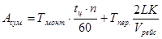
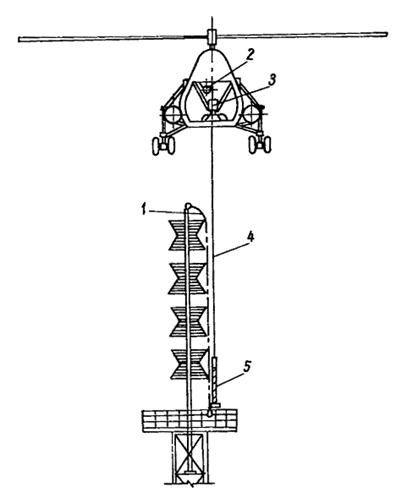
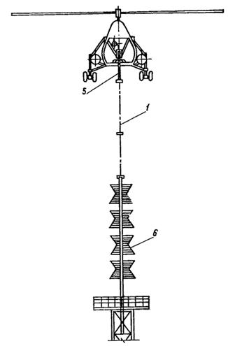

Министерство монтажных и
специальных
строительных работ СССР
УТВЕРЖДАЮ
заместитель министра монтажных
и специальных строительных
работ СССР
А.И. Михальченко
15 мая 1985 г.
МОНТАЖ СТРОИТЕЛЬНЫХ КОНСТРУКЦИЙ
С ПРИМЕНЕНИЕМ ВЕРТОЛЕТОВ
ВСН 463-85
Минмонтажспецстрой СССР
Центральное бюро научно-технической информации
Москва 1986
В данной инструкции изложены методы монтажа конструкций с применением вертолетов. Приведены их характеристики, освещены вопросы подготовки и организации вертолетного монтажа, технологии и безопасности производства работ.
Инструкция предназначена для инженерно-технических работников строительных организаций.
Разработаны
ВНИПИ Промстальконсрукция Минмонтажспецстроя СССР
Руководитель темы и ответственный исполнитель Барон Р.И.
ГосНИИГА Министерства гражданской авиации СССР
Исполнитель Макаров К.Н.
Внесены ВНИПИ Промстальконструкция
Подготовлены к утверждению Главным техническим управлением
Сукальский Г.А.
|
Министерство монтажных и специальных строительных работ СССР (Минмонтажспецстрой СССР) |
Ведомственные строительные нормы. Монтаж строительных конструкций с применением вертолетов |
ВСН 463-85 Минмонтажспецстрой СССР |
|
Разработаны впервые |
1.1. Настоящая инструкция устанавливает требования к организации и технологии монтажа строительных конструкций с применением вертолетов (вертолетный монтаж).
Инструкция не распространяется на работы по транспортировке конструкций на внешней подвеске и внутри фюзеляжа вертолета.
1.2. При вертолетном монтаже необходимо соблюдать требования главы СНиП III-18-75 "Правила производства и приемки работ. Металлические конструкции" и настоящей инструкции.
1.3. При использовании в качестве грузоподъемного механизма вертолета следует учитывать следующие его основные монтажные качества:
независимость от наземных условий стройплощадки (за исключением случаев, когда в непосредственной близости от места монтажа расположены высотные сооружения);
возможность подъема груза на любую высоту для современных сооружений;
высокая мобильность, обеспечивающая самостоятельное перемещение груза с объекта на объект;
возможность сочетать монтажные работы с транспортировкой грузов на внешней подвеске на большие расстояния.
Необходимо учитывать особенности вертолетов по сравнению с монтажными кранами:
высокую скорость опускания конструкции на монтажный стык (до 0,5 м/с);
ограниченность монтажного висения вертолета во времени (10 - 15 мин);
наличие интенсивного ветрового потока от винтов вертолета (до 25 м/с) на монтируемую конструкцию, соседние сооружения и монтажников в зоне работ.
|
Внесены: Главным техническим управлением Минмонтажспецстроя СССР ВНИПИ Промстальконструкция |
Утверждены Мимонтажспецстроем СССР 15 мая 1985 г. |
Срок введения в действие 1 января 1986 г. |
1.4. Вертолетный монтаж следует применять на строительстве, например, в особо стесненных условиях и труднодоступных районах, при проведении реконструкции на действующем производстве, монтаже высотных сооружений, при очаговом характере размещения объектов.
1.5. Критерием эффективного применения вертолетов должно быть сокращение сроков монтажа конструкций и досрочный ввод объекта в эксплуатацию.
Использование вертолета необходимо подтверждать технико-экономическим расчетом эффективности возможных вариантов монтажа.
1.6. Проект производства работ (ППР) должна разрабатывать специализированная проектно-технологическая организация, имеющая специалистов, владеющих спецификой монтажа с применением вертолетов. При этом необходимо руководствоваться "Инструкцией по разработке ППР на монтаж строительных конструкций" ВСН 193-81/Мимонтажспецстрой СССР.
1.7. ППР должен быть согласован с монтажной организацией и предприятием Министерства гражданской авиации СССР (авиаотрядом), которое выделяет вертолет.
Стройгенплан, мероприятия по технике безопасности производства работ и полетов следует согласовывать также с генподрядной строительной организацией и дирекцией предприятия, на чьей территории ведутся работы.
1.8. В чертежах КМ или КЖ должна быть отражена специфика вертолетного монтажа: разделение сооружения на монтажные блоки, обеспечение их пространственной жесткости и временной устойчивости, технологичность монтажных стыков.
Дополнительные технические требования (ДТТ) на проектирование, изготовление конструкций и производство работ составляет организация, разрабатывающая ППР.
1.9. Организация-разработчик ППР осуществляет авторский надзор за выполнением вертолетного монтажа как на стадии подготовительных работ, так и в процессе монтажа.
2.1. Характеристики и габариты вертолетов, рекомендуемых для применения на монтажных работах, приведены в табл. 1 и на рис. 1 - 3.
Таблица 1
|
Марка вертолета |
|||||
|
Ми-8 |
Ка-32 |
Ми-6 |
Ми-10К |
Ми-26 |
|
|
Масса груза, перевозимого на внешней подвеске (максимальная), кг |
2500 |
5000 |
8000 |
11000 |
20000 |
|
Грузоподъемность на монтажных работах (максимальная), кг |
2500 |
5000 |
6000 |
8500 |
15000-16000 |
|
Масса груза, перевозимого внутри фюзеляжа (максимальная), кг |
4000 |
3500 |
12000 |
3000 |
20000 |
|
Масса пустого вертолета, кг |
6800 |
6500 |
27900 |
25500 |
28200 |
|
Длина вертолета, м |
25,2 |
15,9 |
42,0 |
41,9 |
33,7 |
|
Длина несущего винта, м |
21,3 |
15,9 |
35,0 |
35,0 |
32,0 |
|
Размеры грузовой кабины, м: |
|||||
|
длина |
5,3 |
4,5 |
11,8 |
13,9 |
12,0 |
|
ширина |
2,3 |
1,3 |
2,6 |
2,4 |
3,25 |
|
высота |
1,8 |
1,3 |
2,6 |
2,3 |
2,95 |
|
Потолок динамический, м |
4500 |
3500 |
4500 |
3000 |
4600 |
|
Продолжительность полета (максимальная), ч |
2,1 |
3,0 |
5,0 |
3,5 |
3,0 |
|
Дальность полета (максимальная), км |
600 |
810 |
1000 |
650 |
800 |
|
Начало эксплуатации в народном хозяйстве, год |
1968 |
1986-1987 |
1962 |
1974 |
1986-1987 |
Примечание. Вертолеты Ка-32 и Ми-26 - новые машины, которые проходят стадию испытаний и на монтажных работах еще не применялись.
2.2. Грузоподъемность вертолета в конкретных условиях зависит от его взлетной массы Рвзл., которая определяется летчиком по номограммам, приведенным в "Руководстве летной эксплуатации" каждого типа вертолета.
2.3. При выборе типа вертолета необходимо учитывать, что условием безопасного монтажа является пилотирование относительно ориентиров, которые удалены от летчика на расстоянии не более 50 м. В качестве ориентиров следует использовать конструкции в зоне монтажного стыка, а также близко расположенные сооружения или специальные внешние выносные ориентиры.
Рис. 1. Схема вертолета Ми-8

Рис. 2. Схема вертолета Ми-10К
Рис. 3. Схема вертолета Ми-26
2.4. Для высотного монтажа (при отсутствии внешних ориентиров) допускается применение вертолета Ми-10К, на котором летчик из выносной кабины имеет прямой обзор монтажной зоны и груза на внешней подвеске (рис. 4).
Вертолеты Ми-8, Ка-32, Ми-6, Ми-26 следует применять при наличии внешних ориентиров (рис. 5), так как на этих машинах летчику не обеспечен прямой обзор монтажной зоны.
Возможность применения нового вертолета Ми-26 на монтаже без внешних ориентиров будет определена после проведения специальных испытаний, вызванных тем, что на этой машине нет выносной кабины, но имеются телевизионные камеры, обеспечивающие летчику определенный обзор зоны монтажа и груза.
Рис. 4. Зона обзора летчика из вертолета Ми-10К
Рис. 5. Зона обзора выносного ориентира из вертолета Ми-6
2.5. Взаимоотношения между гражданской авиацией - территориальным авиаотрядом и заказчиком - строительным управлением определяются "Основными условиями на выполнение в народном хозяйстве работ самолетами и вертолетами гражданской авиации СССР и типовыми договорами на эти работы" (издание МГА СССР, 1971 г.) путем заключения "Соглашения о периодическом авиационном обслуживании" (см. приложение).
2.6. Заявку с кратким описанием объекта монтажа, предполагаемым количеством полетов и марки вертолета необходимо направлять в Управление применения авиации в народном хозяйстве (УПАНХ МГА СССР) до 1 марта на весь объем работ текущего года.
2.7. Оплату аренды вертолета следует производить за фактические налет часов на основе "Тарифов на работы по применению авиации в народном хозяйстве" (приказ министра гражданской авиации от 31 марта 1981 г. № 71), с учетом перелета к месту монтажа и обратно (табл. 2).
Таблица 2
|
Тарифы за летный час, руб. |
||||
|
Строительно-монтажные работы |
Транспортировка грузов на внешней подвеске |
Перелет вертолета |
||
|
I группа |
II группа |
|||
|
Ми-10К |
2700 |
2400 |
1400 |
2000 |
|
Ми-6 |
2200 |
1950 |
1300 |
1660 |
|
Ка-26 |
280 |
240 |
180 |
220 |
|
Ми-8 |
1000 |
850 |
530 |
740 |
2.8. Тариф на перелет вертолета от базы до объекта монтажа и обратно зависит от протяженности пути по территории районов, входящих в группы I, II. К оплате II группы должны относиться перелеты между пунктами, не связанными железными дорогами, на территории Ямало-Ненецкого, Таймырского и Эвенкийского автономных округов, Красноярского и Хабаровского краев, Мурманской, Магаданской, Камчатской и Сахалинской областей, Якутской АССР.
2.9. Необходимо координировать заказы на вертолетный монтаж по времени и территориально, выполнять их при одном перелете вертолета от базы приписки, что даст возможность значительно уменьшить оплату перелета вертолета (из расчета на одну работу).
2.10. Суммарная стоимость аренды вертолета Асум. при выполнении монтажных работ слагается из стоимости монтажных полетов, а также перелета вертолета от базы до объекта монтажа (туда-обратно) и рассчитывается по формуле:

где Тмонт. - тариф на монтажные работы;
Тпер. - тариф на перелет, руб. (за летный час);
tц - средняя продолжительность монтажного цикла, мин;
n - количество монтажных полетов;
К - коэффициент непрямолинейности трассы перелета;
L - дальность перелета;
Vрейс - рейсовая скорость перелета, км/ч.
2.11. Для предварительной оценки расходов на аренду вертолета следует принимать:
продолжительность монтажного цикла tц = 15 - 25 мин (при стоянке вертолета на расстоянии 500 - 2000 м от объекта монтажа);
коэффициент непрямолинейности пути К = 1,2;
рейсовую скорость вертолета при перелете Vрейс = 180 км/ч.
2.12. Технология монтажа, включая подготовительные работы, должна обеспечивать максимально возможную загрузку вертолета по времени. Нетехнологические простои приводят к штрафным санкциям в виде предъявления к оплате стоимости аренды вертолета по нормам гарантийного налета (табл. 3).
Таблица 3
|
Месячные нормы гарантийного налета, ч |
||
|
январь - апрель, ноябрь - декабрь |
май - октябрь |
|
|
Ми-10К, Ми-6, Ми-8 |
70 |
80 |
|
Ка-26 |
60 |
70 |
3.1. До начала монтажа необходимо организовать единую монтажно-вертолетную площадку (МВП), состоящую из:
взлетно-посадочной площадки (ВПП), в центре которой располагается рабочая площадь для непосредственного взлета, посадки и стоянки вертолета;
монтажной площадки для складирования и сборки конструкций с отдельными зонами хранения готовых к монтажу блоков;
территории для складирования монтажного оборудования и инвентаря;
зоны для стоянки вспомогательных механизмов (самоходного крана, топливозаправщика и т.д.);
зоны проведения тренировочных полетов с пробной установкой блоков;
зоны расположения отдельных помещений для дневного отдыха экипажа и монтажников, а также хранения снятого с вертолета оборудования и инструмента.
На рис. 6 приведена схема МВП для монтажа группы мачтовых сооружений.
3.2. Местоположение и устройство МВП, ее размеры, покрытие, свободные зоны полета и близко расположенные строения (табл. 4, рис. 7) должны отвечать "Инструкции по проектированию вертолетных станций, вертодромов и посадочных площадок для вертолетов гражданской авиации" (издание МГА СССР, 1977 г.).
Таблица 4
|
Размеры, м |
|||
|
Ми-10К, Ми-6 |
Ми-8 |
Ка-26 |
|
|
Взлетно-посадочная площадка |
80´80 |
50´50 |
35´35 |
|
Рабочая площадь (внутри МВП) для стоянки, взлета и посадки вертолета (аха) |
20´20 |
20´20 |
15´15 |
|
Прочность грунта рабочей площадки |
не менее 500 КПа (5 кг/см2) |
не менее 300 КПа |
(3 кг/см2) |
|
Полоса безопасности (а1) |
30 |
15 |
10 |
|
Высота h ограничения препятствий в полосе воздушных подходов |
150 |
150 |
150 |
|
Габариты участков воздушных подходов и тангенса углов наклона условной плоскости ограничения препятствий l |
300 |
300 |
300 |
|
tg q |
1:2 |
1:2 |
1:2 |
|
tg b |
1:1 |
1:1 |
1:1 |
Рис. 6. Схема монтажно-вертолетной площадки:
1 - взлетно-посадочная площадка; 2 - рабочая площадь для взлета; 3 - зона проведения тренировочных полетов; 4 - зона стоянки вспомогательных механизмов; 5 -прожекторы; 6 - зона помещений для отдыха экипажа и складирования монтажного оборудования; 7 - территория складирования монтажного оборудования, инвентаря; 8 - монтажная площадка; 9 - зона хранения готовых к монтажу блоков
3.3. Рабочая площадь и подъездные пути топливозаправщика должны иметь твердый надежный грунт, в осенне-весенний период их следует покрывать дорожными плитами, настилом из бревен или засыпать гравием. На пыльных, песчаных и снежных площадках необходимо производить трамбовку грунта.
3.4. На МВП следует выполнять следующие работы:
укрупнительную сборку конструкций, установку направляющих и фиксирующих приспособлений, подмостей и т.д.;
пробную строповку блоков с помощью кранов для определения их массы и пространственного положения;
тренировочные полеты;
строповку блоков к вертолету или укладку их после демонтажа в горизонтальное положение;
техническое обслуживание вертолета, включая его заправку и круглосуточное хранение.
Рис. 7. Схема воздушных подходов к взлетно-посадочной площадке
3.5. На МВП должны находиться самоходный кран, динамометр, сварочные аппараты, указатель направления ветра, телефон, средства пожаротушения и оказания первой медицинской помощи.
3.6. На МВП следует постоянно иметь запас готовых к монтажу блоков, монтажных и строповочных устройств, подмостей минимум на 3 дня работы (темп монтажа должен быть определен в ППР).
3.7. Вызов вертолета непосредственно на монтаж необходимо производить телеграммой за подписью руководителя монтажной организации, который несет ответственность за технологически неоправданные простои вертолета.
3.8. До вызова вертолета на монтаж необходимо обеспечить:
комплектность монтируемых конструкций, монтажных приспособлений, строповочных устройств и "ловителей";
готовность МВП и подъездных путей к ней;
взвешивание монтажных блоков, с составлением акта;
последовательную контрольную сборку каждых двух соседних монтажных блоков;
приемку по акту фундаментов или отметок монтажных стыков конструкций, с которых начинается вертолетный монтаж;
заземление высотного сооружения на время монтажа;
формирование бригад для работы в зоне монтажа и на МВП.
3.9. Необходимо заранее получать разрешение контрольных органов на выполнение монтажных полетов, информировать местные органы власти о предполагаемом монтаже и согласовывать конкретные мероприятия по обеспечению безопасности работ.
4.1. Руководство монтажом должен осуществлять опытный инженерно-технический работник монтажного управления. Корректировку действий вертолета в период монтажного цикла выполняет руководитель полетов, назначаемый из числа летного состава.
Оба руководителя должны находиться в местах, удобных для наблюдения монтажных стыков и груза на внешней подвеске, быть в постоянном контакте, иметь переносные радиостанции, а при необходимости - бинокли.
4.2. До начала монтажа представитель экипажа вертолета должен проводить инструктаж бригады монтажников в целях обучения их приемам работ с внешней подвеской и электрозамком, отработки взаимодействий, сигнализации и радиосвязи между экипажем и монтажниками.
Перед сложным монтажом необходимо выполнять тренировочные полеты с установкой монтируемых конструкций в зоне земли. Мероприятия по проведению тренировочных полетов должны быть определены в ППР.
4.3. Монтажные работы с применением вертолетов допускается выполнять при ветре силой не более 5 баллов (10 м/с) на уровне монтажного горизонта.
4.4. С помощью вертолета следует производить монтаж конструкции методом наращивания или методом поворота вокруг неподвижных шарниров.
При монтаже наращиванием 90% реальной грузоподъемности вертолета приходится на массу блока, оборудованного подмостями, монтажными и строповочными устройствами; 10% реальной грузоподъемности вертолета следует резервировать на возможную потерю грузоподъемности в связи с изменением атмосферных условий.
При монтаже поворотом масса блока может превышать грузоподъемность вертолета в 2-3 раза (в зависимости от положения центра тяжести конструкции).
4.5. Монтажный цикл при производстве работ методом наращивания состоит из следующих операций (рис. 8):
строповка блока и подъем его на »3,0 м от земли;
первое контрольное висение, транспортировка блока в зону монтажа (траектория перемещения вертолета зависит от взаимного расположения объекта и МВП, условий генплана, высоты монтажного стыка, направления ветра и т.д.);
второе контрольное висение на расстоянии 20 - 30 м от объекта монтажа с последующим выходом на монтажную вертикаль;
монтажное висение, вертикальное снижение и установка блока в проектное положение;
третье контрольное висение с прослабленной внешней подвеской, с целью оценки положения установленного блока, и расстроповка блока;
отлет вертолета из зоны монтажа.
4.6. Подлет вертолета в зону монтажа следует производить так, чтобы расстояние между основанием блока и стыком составляло »2,0 м; опускание блока с большей высоты сопровождается смещением вертолета в сторону и, следовательно, снижением точности установки.
После расстроповки груза вертолет должен уходить вертикально вверх, с тем, чтобы уменьшить ветровой напор на смонтированную конструкцию.
Рис. 8. Схема монтажа наращиванием:
1 - строповка блоков на МВП; 2 - первое контрольное висение; 3 - транспортировка блока; 4 - второе контрольное висение; 5 - монтажное висение; 6 - третье контрольное висение и отстрапливание блока; 7 - уход вертолета из зоны монтажа
4.7. Следует стремиться к исключению людей из монтажного цикла путем применения системы ориентации груза или проектирования симметричного в плане блока.
4.8. Вертолет с помощью системы ориентации груза или с помощью монтажников выполняет грубое наведение блока в зону стыка. Точную установку блока должны обеспечивать направляющие и фиксирующие приспособления (ловители), закрепленные на монтажных стыках.
Для обеспечения необходимой точности монтажа следует проводить на земле сборку и примаркировку стыкуемых блоков совместно с установкой "ловителей".
4.11. При разработке ППР необходимо проверять расчетом устойчивость смонтированной конструкции после ее расстроповки от вертолета, но до проектного закрепления.
4.12. При производстве демонтажных работ массу снимаемых блоков следует определять по чертежам КМД с учетом возможной замены металла при изготовлении, монтаже и ремонтах.
4.13. До начала демонтажа необходимо вскрывать стыки, отделяющие демонтируемую часть конструкции от нижележащей, одновременно обеспечивая ее временную устойчивость (с учетом ветрового напора от лопастей вертолета).
4.14. Монтажный цикл при производстве работ методом поворота высотных сооружений (например, башен) состоит из следующих операций:
строповка и первое контрольное висение после подъема оголовка башни на »3,0 м от шпальных клеток;
подъем башни до нейтрального положения;
торможение башни на участке от нейтрального до проектного положения;
второе контрольное висение, временное закрепление башмаков башни к фундаментам (например, струбцинами);
расстроповка и отлет вертолета из зоны монтажа вертикально вверх (рис. 9).
4.15. Перед монтажом методом поворота следует производить испытания конструкции и оснастки путем пробного подъема краном (трактором) за оголовок, отрывом от сборочных клеток на 150 - 200 мм, выдержки в этом положении 15 - 20 мин и опускания на место.
При этом следует производить определение суммарного усилия на внешнюю подвеску вертолета, а также осмотр узлов башни и монтажной оснастки.
4.16. Монтаж методом поворота вокруг шарнира следует выполнять с помощью специальной подъемно-тормозной системы (без применения тормозной тяги и лебедки). Система должна обеспечивать плавный переход башни через нейтральное положение, ее торможение на заключительном этапе поворота, без динамических нагрузок на вертолет и монтируемую конструкцию.
Рис. 9. Схема подъема башни методом поворота:
1 - вертолет Ми-10К; 2 - монтируемая башня; 3 - траектория подъема; 4 - траектория торможения; 5 - подъемно-тормозная система; 6 - балансирная траверса; 7 - дополнительные опоры, 8 - шарнир поворота; 9 - центр тяжести башни
4.17. При монтаже летчик должен осуществлять перемещения вертолета по радиокомандам бортоператора и руководителя полетов.
Расстроповку конструкции следует производить по команде руководителя полетов только после получения им от руководителя монтажа информации о точности и качестве установки конструкций.
При сложных работах целесообразно проводить совместные послеполетные разборы с участием экипажа и монтажников.
5.1. При вертолетном монтаже наращиванием необходимо применять направляющие и фиксирующие приспособления - "ловители".
5.2. Направляющие приспособления должны ограничивать перемещения и обеспечивать точное наведение монтируемой конструкции во время непосредственной установки ее на стык.
Фиксирующие приспособления должны обеспечивать устойчивость установленного блока (до его проектного закрепления) или демонтируемого блока (в период от раскрытия постоянных стыков до его демонтажа).
5.3. Следует предусматривать, как правило, съемные "ловители", выполняющие одновременно функции направляющего и фиксирующего приспособления.
Конструктивные решения по "ловителям" могут привести к изменению стыков на стадии чертежей КМ.
5.4. "Ловители" следует окрашивать светлой краской для обеспечения визуального наблюдения из вертолета и смазывать техническим вазелином, что уменьшает заклинивание и зацепы монтируемого блока.
5.5. Направляющие и фиксирующие приспособления должны быть рассчитаны, а сооружение и монтируемая конструкция - проверены на следующие дополнительные нагрузки:
а) динамическое воздействие при опускании блока на стык со скоростью до 0,5 м/с;
б) динамическое воздействие от колебаний блока на внешней подвеске с максимальной амплитудой ±1,5 м;
в) максимальный ветровой напор при скорости ветра до 25 м/с, создаваемый винтами вертолета и действующий в период подхода и ухода вертолета из зоны монтажа, а также фактический ветер на высоте монтажного горизонта.
5.6. Перемещения вертолета (горизонтальные и вертикальные) в период монтажного цикла наращиванием следует осуществлять ступенчато, по 0,3 - 0,5 м, на минимально возможных скоростях, с целью избежать высоких динамических нагрузок на смонтированную часть сооружения и монтажную оснастку.
5.7. Для изготовления "ловителей" оптимальным является трубчатый профиль, так как он равнопрочен в обеих плоскостях и имеет наименьшую поверхность соприкосновения с монтируемой конструкцией.
5.8. Конструкция "ловителя" зависит от формы, массы, ветровой поверхности монтажного блока и включает наклонную и вертикальную части.
Наклонную часть "ловителя" выполняют, как правило, под углом скольжения 30 - 40°. Вертикальная часть "ловителя" обеспечивает временную устойчивость смонтированного блока и крепление "ловителя" к ранее смонтированной конструкции. Катет наклона (развал) "ловителя" должен превышать размеры амплитуды колебаний груза.
5.9. Для монтажа конструкций, не требующих ориентации в плане, целесообразно применять внутренние "ловители" (рис. 10). Следует учитывать, что при больших размерах сечения блока и необходимости сохранить требуемый угол скольжения замкнутый "ловитель" становится громоздким, затрудняется его демонтаж.
5.10. Для монтажа решетчатых мачтово-башенных сооружений целесообразно применять внутренние канатные "ловители", обладающие демпфирующими свойствами и малой металлоемкостью (рис. 11). Канатный "ловитель" следует использовать также для строповки монтажного блока. Натяжение канатов следует производить путем удлинения центральной стойки с помощью вмонтированного домкрата.
5.11. При несимметричном в плане монтажном блоке и невозможности его ориентирования с помощью людей (например, при монтаже антенно-фидерных стволов телебашен) целесообразно применять наружные консольные "ловители". При этом грубую наводку блока должен осуществлять вертолет, оборудованный системой ориентации груза в полете. Точную установку блока выполняют с помощью "ловителей" (рис. 12).
5.12. Монтаж консольных бликов выполняют с применением консольных "ловителей" (рис. 13). Строповку следует производить под углом, который обеспечивает введение верхней опорной части блока в "ловитель", при этом нижняя опорная часть блока должна совпасть с соответствующими узлами на ранее смонтированной конструкции. Таким образом "ловитель" воспринимает опрокидывающий момент от массы смонтированного блока до его проектного закрепления.
Рис. 10. Схема монтажа с применением внутреннего "ловителя":
1 - монтируемый блок; 2 - внутренний "ловитель"; q - расчетная ветровая нагрузка; Q - масса блока; N - сила, создающая удерживающий момент на плече h
Рис. 11. Схема монтажа с применением канатного "ловителя":
а - общий вид; б - узел установки "ловителя"; 1 - вертолет Ми-10К; 2 - монтируемый блок; 3 - канат-ограничитель; 4 - стойка "ловителя"; 5 - канатные направляющие; 6 - домкрат
5.13. При монтаже длинномерных, например, балочных конструкций, когда необходимо только ограничить перемещение блока в продольном и поперечном направлениях, применяют консольные "ловители" (рис. 14).
6.1. Строповку конструкций следует осуществлять с помощью внешних подвесок, входящих в комплект оборудования каждого вертолета (рис. 15).
Тросы внешних подвесок изготавливают из малораскручивающихся канатов по ГОСТ 3088-80; все соединения выполняют на запрессовке.
6.2. Длина грузового троса внешней подвески изменяется от 4 до 40 м путем вставки тросов-удлинителей, зависит от условий монтажа и формы груза. Следует применять короткие подвески с целью уменьшения колебаний блока в полете, улучшения обзора зоны монтажа.
Расстояние между вертолетом и монтируемой конструкцией должно быть не менее 6 м.
Рис. 12. Схема установки наружных "ловителей":
1 - монтируемый блок; 2 - ранее смонтированный блок; 3 - опорные столики; 4 - элементы наружный "ловителей"; 5 - подмости
Рис. 13. Схема монтажа консольных блоков:
1 - вертолет Ми-10К; 2 - консольный блок; 3 - "ловитель"; 4 - нижние опорные узлы
Рис. 14. Схема установки "ловителей" для монтажа длинномерного блока:
1 - смонтированный блок; 2 - "ловители", фиксирующие блок в поперечном направлении; 3 - "ловители", фиксирующие блок в продольном направлении
Рис. 15. Система внешней подвески вертолета-крана Ми-10К:
1 - корпус вертолета; 2 - замок-вертлюг; 3 - лебедка ЛПГ-3; 4 - электрокабель; 5 - электрозамок; 6 - внешняя подвеска; 7 - грузовой люк с ограждением
6.3. Необходимо выполнять условия зависимости предельных длин подвесок относительно массы монтируемого груза (рис. 16). Общая длина подвески (по условиям безопасности полетов) должна быть не меньше наибольшей консольной части монтируемого груза.
6.4. Сопряжение нижних узлов внешних подвесок (рис. 17 и табл. 5) с монтажными стропами должно обеспечивать их нормальную работу. Непосредственное соединение монтажного каната с зевом электрозамка недопустимо.
Таблица 5
|
Вертолетный электрозамок |
Крюк грузового троса внешней подвески |
Крюк тросов "паук" |
|||||||||
|
Æ |
а |
В |
l |
l1 |
Æ |
а |
В |
Æ |
а |
В |
|
|
Ми-10К |
35 |
20 |
51 |
60 |
60 |
46 |
38 |
46 |
38 |
32 |
32 |
|
Ми-6 |
- |
- |
- |
- |
- |
46 |
38 |
46 |
38 |
32 |
32 |
|
Ми-8 |
25 |
15 |
38 |
50 |
50 |
24 |
20 |
30 |
36 |
14 |
32 |
Рис. 16. График зависимости предельных длин подвесок от масс монтируемого груза
Рис. 17. Схема силовых узлов внешних подвесок:
а - крепление тросов "паука" к электрозамку; б - схема крюков внешней подвески; в - деталь электрозамка; 1 - грузовой трос; 2 - электрозамок; 3 - переходная скоба; 4 - трос "паук" или монтажные стропы
6.5. Крепление стропов к электрозамку или крюку внешней подвески следует выполнять через специальные переходные траверсы (звенья), так как размеры монтажных крюков, скоб, звеньев, как правило, превосходят соответствующие размеры электрозамков и крюков вертолетных подвесок. Примеры траверс приведены на рис. 18.
Рис. 18. Схема монтажной траверсы и звена под габариты вертолетных электрозамков и крюков:
1 - силовой рычаг электрозамка; 2 - траверса (звено); 3 - монтажные стропы
6.6. Крепление стропов или тросов внешней подвески к конструкции на "удав" запрещается, в связи с этим на монтажном блоке следует предусматривать специальные проушины.
6.7. Все виды монтажных соединений следует выполнять только через коуши. Крюки внешних подвесок и монтажных стропов должны быть оборудованы предохранительными скобами для предотвращения выпадания канатов.
6.8. Монтажные стропы должны полностью соответствовать требованиям "Правил устройства и безопасной эксплуатации грузоподъемных кранов". При расчете стропов следует принимать коэффициент запаса прочности канатов равным 6. Ответственность за качество и прочность монтажных стропов несет монтажная организация.
6.9. Строповку монтажного блока следует выполнять двумя способами: при конечной или изменяющейся длине внешней подвески.
Первый способ заключается в следующем:
вертолет зависает над грузом с выпущенной внешней подвеской, заранее скомплектованной в конечную длину;
монтажники соединяют нижние узлы подвески со стропами, закрепленными за конструкцию;
вертолет взлетает, перемещается в сторону груза, центрируется над ним с прислабленным тросом, после чего выполняет плавный вертикальный подъем до полного натяжения подвесной системы;
вертолет отделяет груз от земли на »3,0 м и, выполнив контрольное висение, транспортирует груз в зону монтажа.
Второй способ отличается тем, что строповку следует выполнять через подвеску, закрепленную к канатику бортовой лебедки (Q = 500 кг). В процессе строповки лебедка выбирает свободную длину канатика до входа верхнего узла грузового троса в замок-вертлюг (рис. 19). Такой способ следует применять в условиях, когда монтажное висение вертолета выполняется в стороне от груза.
6.10. По окончании строповки блока и до его подъема вертолетом монтажники должны удалиться на безопасное расстояние (20 - 25 м) или спуститься на нижерасположенные, постоянно закрепленные конструкции.
6.11. При монтаже с помощью вертолета Ми-10К методом наращивания следует применять систему азимутальной ориентации груза в пространстве (рис. 20), вместо внешней подвески, изображенной на рис. 15.
Применение системы ориентации позволяет:
исключить участие в монтажном цикле людей, которые ранее обеспечивали вручную (за расчалки) ориентирование блока в плане (см. п. 4.9);
сократить продолжительность каждого монтажного цикла в среднем на 5 мин, тем самым уменьшив оплачиваемое летное время и расход авиационного топлива;
включить в номенклатуру монтируемые вертолетом конструкции - высотные сооружения типа мачт, башен, каркасов и стволов вытяжных труб, антенн и т.д., на которых нахождение людей под вертолетом исключается (см. п. 4.10).
 
Рис. 19. Строповка с применением лебедки Q = 500 кг:
1 - монтажный строп; 2 - лебедка Q = 500 кг; 3 - замок-вертлюг; 4 - канатик лебедки Q = 500 кг; 5 - газовой канат внешней подвески; 6 - турникетная антенна
Рис. 20. Общий вид системы азимутальной ориентации груза в пространстве:
1 - траверса системы ориентации; 2 - электрозамок; 3 - паук внешней подвески; 4 - крюк внешней подвески вертолета; 5 - жесткая стабилизирующая тяга; 6 - канаты с амортизаторами; 7 - фиксатор; 8 - тросик фиксатора; 9 - фиксирующие диски
6.12. Во избежание поражения статическим электричеством монтажникам запрещается дотрагиваться при строповке до внешней подвески, пока последняя не коснется земли или заземленных металлоконструкций.
6.13. Расстроповку груза следует производить тремя способами:
дистанционно, с помощью электрозамков, расположенных в нижних узлах подвески;
опусканием вручную бортоператором всей внешней подвески на фале (при отсутствии электрозамка в нижнем узле подвески);
путем отсоединения строповочных канатов от груза монтажниками (в случае нахождения последних в непосредственной близости от блока).
Наиболее безопасным является способ дистанционной расстроповки с помощью электрозамков.
6.14. Перед строповкой блока необходимо тщательно проверять отсутствие на нем незакрепленных деталей, строительного мусора, электродов, окалин и т.д.
7.1. При монтаже конструкций с применением вертолетов следует выполнять требования СНиП III-4-80 "Техника безопасности в строительстве" и настоящей инструкции.
7.2. На выполнение монтажных работ с применением вертолетов необходимо выдавать наряд-допуск, оформленный в соответствии с п. 1.7 СНиП III-4-80.
К работе непосредственно с вертолетом допускаются лица, прошедшие медицинский осмотр, имеющие стаж верхолазных работ не менее 3 лет и тарифный разряд не ниже четвертого.
7.3. С бригадой монтажников необходимо проводить инструктаж по технике безопасности и специфике выполнения работ с помощью вертолета, разбор ППР и определять конкретную задачу каждого участника работы.
В связи с воздействием статического электричества при инструктаже обращать внимание на соблюдение п. 6.11 настоящей инструкции.
Проведение этих мероприятий должно регистрироваться в журнале инструктажа по технике безопасности.
7.4. При вертолетном монтаже (в отличие от кранового) следует различать два понятия: опасная зона монтажа и опасная зона подлета (отлета) с грузом.
В опасную зону монтажа входят: при методе наращивания - территория с радиусом 0,5 высоты сооружения; при методе поворота - территория, показанная на рис. 21.
Во время монтажного цикла нахождение людей в опасной зоне запрещается. Исключение должен составлять монтаж высотных сооружений наращиванием, когда монтажники могут находиться на 10 - 15 м ниже стыка на проектнозакреплённых конструкциях, а также при непосредственном участии монтажников в установке блоков (что оговаривается в ППР).
Рис. 21. Границы опасной зоны монтажа поворотом вокруг шарнира:
D - диаметр несущего винта вертолета; Н - высота монтируемого сооружения
7.5. В опасную зону подлета входят монтажно-вертолетная площадка и территория, над которой вертолет перемещает конструкцию в зону монтажа. Территория МВП должна быть доступна только для непосредственных участников работ. Полеты целесообразно выполнять вдоль магистралей, русел рек, незастроенных массивов, т.е. малозаселенных территорий, которые на период собственно монтажного цикла могут быть временно перекрыты.
7.6. Границы опасной зоны монтажа и МВП должны быть ограждены флажками, предупредительными знаками и надписями.
При производстве работ над корпусами, территорией действующего производства или городской застройкой необходимо разрабатывать специальные мероприятия по выводу людей из опасной зоны, ее обесточиванию и т.д., а также графики перерывов в наземных работах. Вблизи опасной зоны должны находиться пожарная и скорая помощь.
7.7 МВП и зона монтажа должны быть очищены от мусора, пыльную площадку необходимо полить водой, свежевыпавший снег - укатать. Конструкции, обладающие большой парусностью и способные перемещаться под действием воздушных потоков от винтов вертолета, должны быть закреплены.
7.8. В связи с действием ветрового потока от лопастей вертолета в периоды подхода и ухода его от места монтажа следует ограждать щитами остекление, расположенное в непосредственной близости от места монтажа; тщательно убирать строительные отходы (куски толя, картона, легкого утеплителя, жести и т.д.) во избежание их засасывания ветровым потоком в зону висения вертолета.
7.9. Монтажный блок следует освобождать от посторонних предметов (остатков электродов, гаек, шайб, мусора) во избежание их падения при транспортировке.
7.10. Монтажники должны работать в очках для защиты от пыли и снега, поднимаемых потоками воздуха от винтов вертолета; в обуви на микропористой подошве клеевого метода крепления и резиновых перчатках для защиты от действия статического электричества.
При производстве работ зимой монтажники должны иметь утепленную спецодежду для защиты от дополнительных ветровых воздействий при отрицательных температурах.
В зимнее время следует избегать производства монтажных работ с применением вертолета. Ветровые потоки от винтов вертолета в сочетании с поднимаемым снегом и отрицательные температуры усложняют монтаж и снижают его темп.
7.11. Люльки и подмости следует изготовлять максимально облегченными (в частности, из алюминиевых сплавов), так как их перестановку при вертолетном монтаже выполняют, как правило, вручную или рычажными лебедками.
7.12. В период установки блока (при ориентации его монтажниками) следует запрещать наметывать оттяжки на руки, а также завязывать или закреплять оттяжки груза за постоянные или ранее установленные конструкции.
|
"__" ______ 19___ г. Мы, нижеподписавшиеся, __________________________________________________ ________________ в лице _____________________________________________________ ___________, именуемый в дальнейшем "Авиация", и именуемый в дальнейшем "Заказчик", заключили настоящее соглашение о выполнении "Авиацией" ____________ полетов на следующих условиях: 1. Полеты выполняются "Авиацией" с соблюдением всех требований, изданных МГА документов, регламентирующих летную и техническую эксплуатацию самолетов, вертолетов. Организация и порядок выполнения авиационных работ определяются действующими "Основными условиями на выполнение в народном хозяйстве работ самолетами и вертолетами гражданской авиации СССР". 2. Полеты производятся согласно следующему ориентировочному плану:
3. Полеты производятся по заявкам представителя "Заказчика", заверенным его печатью. 4. О начале работ по каждому периоду "Заказчик" извещает "Авиацию" за ___ дней ____ (письменно, телеграммой и т.п.). Об отказе или уменьшении работ "Заказчик" обязан известить "Авиацию" не менее чем за 15 дней до начала соответствующего периода. 5. "Авиация" приступает к работе по очередному периоду не позже, чем через ___ дней от срока, указанного в извещении "Заказчика". 6. Для выполнения полетов с временных аэродромов, посадочных площадок "Заказчик" завозит за свой счет горюче-смазочные материалы (ГСМ), полученные в подотчет от "Авиации" в следующем количестве и в сроки:
Оставшиеся неиспользованными ГСМ и освободившуюся тару "Авиации" "Заказчик" вывозит за свой счет и сдает на аэродром, в аэропорт ________________ не позднее ___________. название 7. "Заказчик" обязан страховать в органах Госстраха своих работников, участвующих в полетах или перевозимых без приобретения билетов на выделяемых по соглашению воздушных судах. 8. Во время пребывания самолета, вертолета на временном аэродроме, посадочной площадке "Заказчик" обязан: а) обеспечить экипаж ночлегом и за наличный расчет питанием; б) обеспечить охрану самолета, вертолета; 9. Выполнение заявок на полеты "Заказчик" подтверждает своей подписью. По окончании каждого периода составляется акт о выполненных работах в ____ экз., из них ____ экз. для "Авиации". 10. Перед началом каждого периода "Заказчик" перечисляет "Авиации" аванс в размере стоимости работ в данном периоде. До получения аванса "Авиация" полеты не начинает. 11. Расчеты производятся путем выставления "Авиацией" на инкассо платежных требований, к которым прикладываются акты о выполненных работах (см. п. 8). 12. Юридические адреса сторон: "Авиация" Почтовый __________________________________________________________________ Телеграфный _______________________________________________________________ Расчетный счет в __________ № _____________ "Заказчик" Почтовый __________________________________________________________________ Телеграфный _______________________________________________________________ Расчетный счет в __________ № _____________ |
||||||||||||||||||||||||||||||||||||||
|
"Авиация" _______ (подпись) "__" _______ 19__ г. |
"Заказчик" _______ (подпись) "__" _______ 19__ г. |
|||||||||||||||||||||||||||||||||||||
СОДЕРЖАНИЕ